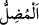

37. (Haram ayları) ertelemek ancak küfürde daha ileri gitmektir. İnkar edenler,
onunla saptırılır. Onu bir yıl helal bir yıl haram sayarlar ki Allah’ın haram kıldığının
sayısını denk getirip Allah’ın haram kıldığını helal yapsınlar. Yaptıkları işin
kötülüğü, kendilerine süslü gösterildi. Allah, kâfirler topluluğunu hidâyete
erdirmez.
“(Haram ayları) ertelemek ancak küfürde daha ileri gitmektir.” Araplar, savaş
halinde iken haram ay girdiği zaman onu helal kabul edip onun yerine bir başka ayı
haram sayıyorlardı. Böylece onlar, haram ayların sırf sayısına itibar ediyorlar, belli
ayların haramlığını reddediyorlardı.
Kâşifî der ki: Şöyle anlatılır: Cahiliye insanlarının mizaçları, savaş ve yağmaya
uygundu. Haram olan aylarda savaş yapmıyorlardı. Üç haram ay fasılasız ardarda
gelince bunalırlar ve “Biz fasılasız üç ayda yağmasız ve talansız kalmaya tahammül
edemeyiz.” derlerdi. Sonra Kinânî’nin aklına çıkar bir yol geldi. Hacıların toplandığı
zaman ayağa kalktı ve onlara şöyle seslendi: Ey Arap toplumu! Allah size Muharrem
ayında savaşı helâl kıldı ve o aydaki haramlığı Safer ayına tehir etti. İnsanlar onun
sözünü kabul ettiler. Ertesi yıl “Allah Teâlâ bu yılda Muharrem’i haram kıldı, Safer’i
helâl kıldı.” diye duyuru yapılıyordu. Zaman geliyordu savaş devam ederken haram ilan
edilmiş ayın haramlığını ondan sonraki aya tehir ediyorlardı ve o ayı helâl sayıyorlardı.
Her yılda dört ayı haram kabul ediyorlardı. Ancak haram ayların özelliğini ihmal
ediyorlar, sadece adet olarak benimsiyor, bunu dikkate alıyorlardı. Bu işe de
nesî’/erteleme diyorlardı.
Nesî’, yani bir ayın haramlığını bir başka aya te’hir edip “ertelemek küfürde daha
ileri gitmektir.” Çünkü bu, Allah’ın haram kıldığı şeyi helal saymak, helal kıldığını da
haram saymak demektir. Böyle bir hareket, onların küfürlerine ekledikleri bir başka
küfürdür. Diğer kâfirlerin bid’atlarına ilâve ettikleri bir bid’attir.
“İnkar edenler, onunla” o davranışla, yâni nesî ile “saptırılır.”
, yâni dalâlete sevkeden Allah Teâlâ’dır. Yani onlar, sapıklığın şartlarına ve
esaslarına teşebbüs ettikleri zaman Allah onlarda sapıklığı yaratır. Ya da saptıranlar
onların reisleridir. Reislerinin peşinden gidenler, onların ihdas ettiği ayların yerinin
değiştirilmesi husûsuna tâbî olmak sûretiyle sapıtırlar. Ya da saptıran, şeytandır. Çünkü
şeytan “el-Mudill” (dalâlete sevk eden) isminin mazharıdır.
Fakir (Bursevî) der ki: Allâme şeyhimiz (Osman Fazlî Efendi)’nin şöyle söylediğini
duydum: Şeytan, nefis ve sapıklık gerçekte birdir. Fakat birincisi şerîat hasebiyle,
ikincisi tarîkat hasebiyle, üçüncüsü de hakîkat hasebiyledir. Her makamda başka
makamda söylenmesi uygun düşmeyen bir söz vardır.
“Onu bir yıl helal” yani tehir edilen ayı bir yıl helal sayarlar ve onun yerine haram
olmayan aylardan bir başka ayı haram sayarlar, “bir yıl haram sayarlar” bir başka yıl
da onun haramlığını muhafaza ederler. Bunu da onu değiştirme ihtiyacı duymadıklarında
yaparlar. (Sözkonusu ay zaten haram olduğu halde) âyette “onu haram sayarlar”